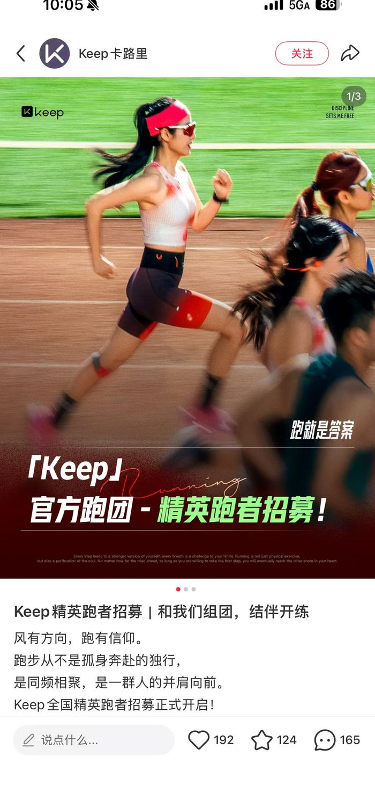
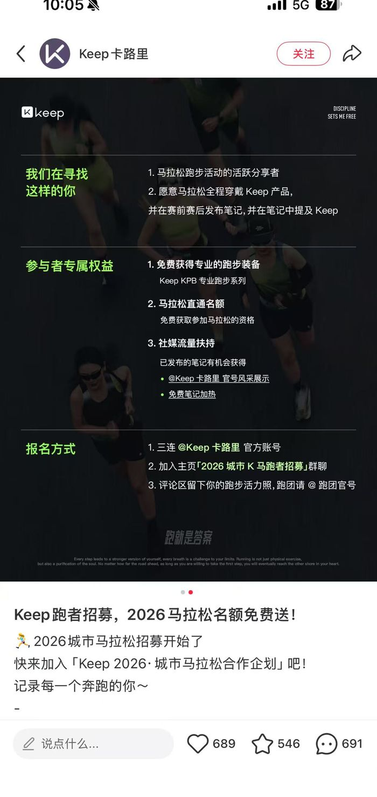
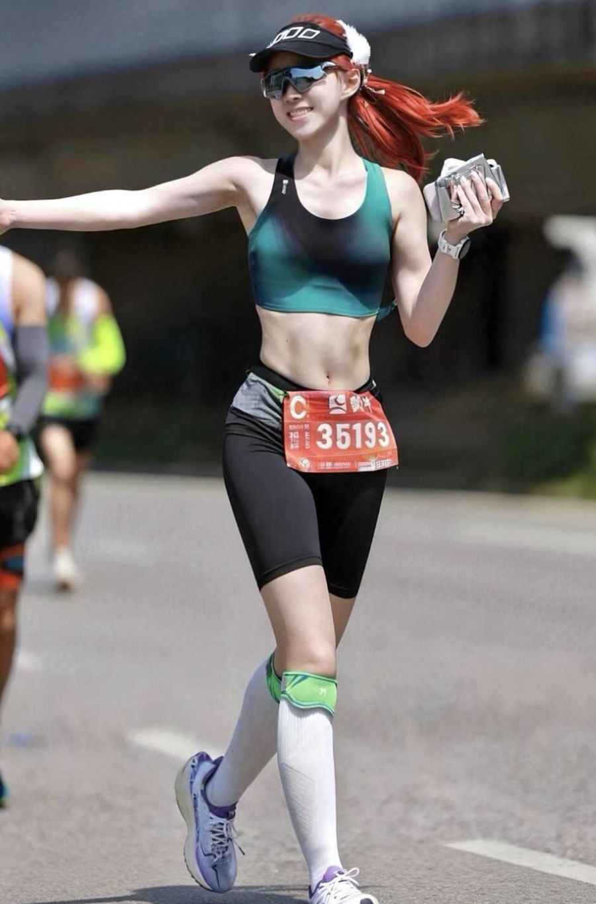
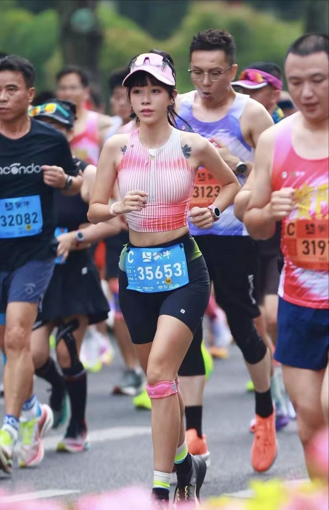

Keep × 京东运动
614 贵阳马拉松赛事合作
新品未上市就进赛场：用 30 位专业跑者 × 90 篇种草笔记，跑通「内容种草 — 电商转化」完整闭环。
达人招募筛选与 brief 制定 · 官方笔记节奏规划 · 跨部门（京东/供应链/设计/App 资源位）协调推进
三线交汇的机会点
关键判断
三方资源互补——Keep 出产品与内容，京东出资源与流量，赛事出人群与场景。不做单点曝光，做「内容—体验—交易」的完整闭环。
跑者只信跑者
人群洞察
① 跑者装备决策高度依赖真实跑者背书，垂类达人实测比品牌广告更有说服力；② 备赛决策前置 1-2 周，赛中/赛后是情感共鸣高峰；③ 磨腋下、闷汗、晃动是跑者服饰明确痛点，与新品卖点一一对应。
一句话策略
以赛事为锚点：达人真实实测内容打心智，官方账号节奏化传播扩声量，京东渠道资源承接转化。
达人种草全链路
招募 → 筛选（我执笔招募笔记）
发布「Keep 精英跑者招募」笔记，报名 135 人；按粉丝体量、账号数据权重、IP 属地三维筛选出 30 位全马/半马跑者（筛选率 22%）。招募笔记单篇互动量最高 689 赞 / 546 收藏 / 691 评论。


Brief → 内容
制定达人 brief：三大内容方向（完赛集锦 / 备赛攻略 / 产品实测）+ 卖点口语化转化要求 + 拍摄穿着规范 + 话题与评论区运营规则，90 篇笔记零违规返工。
发布 → 转化
每人 2 篇：赛前种草（6.8-6.10）+ 赛后回顾（必含展位打卡）；衔接京东拍单与好评沉淀，拍单率 100%、好评 60 条（好评率 100%）。


补给站突发：新品断档危机
发生了什么
种草产品 KPB 为未上市新品，需提前协调工厂赶工尺码数量。负责 KOL 对接的同事未及时同步服饰信息，导致与供应链敲定时只明确了 KOC 部分——KOL 种草出现时间卡点。
冲刺：完整数据
终点复盘
✓ 做对了
选人逻辑成立（在地 + 数据权重，90 篇零返工）；节奏前置（种草卡赛前窗口，赛后情绪承接）；闭环完整（种草 → 拍单 → 好评 → 站内再触达，PV/UV 暴增验证「内容即流量」）。
↗ 可以更好
官方账号自然流量弱（4 篇总曝光 1 万），叠加薯条投放可再放大；达人端可加「爆款钩子」引导（PB 故事、破三叙事）；跨部门信息同步应建立共享文档机制，避免尺码信息断点。
⧉ 可复制经验
「垂类赛事 + 在地达人 + 电商拍单」的组合模式可复制到任何区域赛事与垂类新品上市：锁定人群浓度最高的场景，用在地达人生产真实内容，用电商完成交易闭环与口碑沉淀。